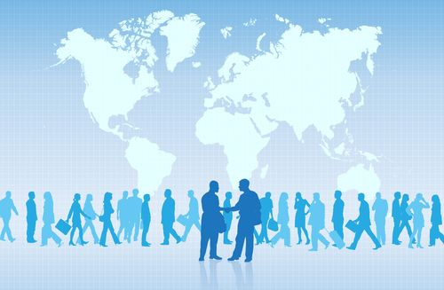

About Me

I`m a College student pursuing a degree in Information Technology and I`m currently studying in Romblon State University in Odiongan Romblon.
When I`m not studying I do my hobbies such as watching movies and reading books.
I`m a College student pursuing a degree in Information Technology and I`m currently studying in Romblon State University in Odiongan Romblon.
When I`m not studying I do my hobbies such as watching movies and reading books.

Reflection on the effects of Globalization on Society

Personal insights and thoughts on the impact of Globalization

Summary of the impacts and importance of Globalization
Before, I thought the world was divided by countries and boundaries. But through this lesson, I realized that we are actually connected in many ways. Globalization is not just about business or trade, but also about how people, cultures, and ideas influence each other even from far away. It made me understand that distance is no longer a barrier and that the world today is more connected than I thought.
Through this lesson, I discovered that globalization connects people in ways I didn’t really notice before. I realized that it’s already part of my daily life, like when I use my phone, watch videos, or scroll through social media, because I’m interacting with people and content from different parts of the world. Even the things I use or buy can come from other countries. This made me understand that no country can stand alone anymore since countries need to work together to solve global problems like climate change, poverty, and conflicts. At the same time, I started to see myself not just as a student in my community, but also as a global citizen who should be aware of what’s happening around the world, respect different cultures, and think about how my actions affect others. I also learned that economies are connected, and products are made through the cooperation of different countries, which means that what I buy can affect people in other places. Although globalization has many benefits like more job opportunities, faster sharing of knowledge, and stronger connections, it also has challenges such as inequality, unfair treatment of workers, and environmental problems. Because of this, I realized that globalization is not perfect and needs proper management. I also learned that no single country controls the world, but organizations like the World Trade Organization, International Monetary Fund, and World Bank help manage global systems, while individuals like me also have the power to make a difference through our choices. This made me realize that even as a student, I have a responsibility to stay informed, respect others, and make better decisions because even small actions can help create a better world.
Until next time!!